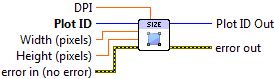

Set Plot Size¶
Set the width and height of the plot.
Because LabVIEW and most output formats are pixel-oriented, you specify the size of the plot in pixels. Plots are stored internally using vector graphics, and can be arbitrarily resized without any loss of detail.
Each plot also has an assocated dots per inch or DPI. When writing to a vector output format like PDF (which has native units of inches), this value determines the size of the plot.
New plots have size 640x480, and a DPI of 80.

 Plot ID/Plot ID Out
Plot ID/Plot ID Out- Plot identifier. Plot ID Out always contains the same value as Plot ID.
 Width (pixels)
Width (pixels)- New plot width. Default is to leave the width unchanged.
- Height (pixels)
- New plot height. Default is to leave the height unchanged.
- DPI
- Dots-per-inch factor used when going from inches to pixels. Default is to leave the DPI unchanged.

 Error In/Out
Error In/Out- Terminals for standard error functionality.
Example¶
Download Resizing.vi,
or see Examples for a complete list of examples.
Errors¶
Other information¶
For Width and Height: non-finite (NaN or Inf) values, and values of 1 or smaller, are ignored and the defaults used. For DPI, values less than 10 will be ignored, and the defaults used.